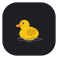

Duck Everything
controle
Ativar globalmente
Preferências para todos os sites permitidos
captura
Salvar PNG…
PNG rápido
opções
Copiar e recortar
Preserva a cópia e o recorte nativos.
Colar
Libera eventos de colagem.
Botão direito
Restaura o menu do navegador.
Selecionar e arrastar
Força seleção de texto por CSS.
Modo Absolute
Interceptação forte; pode afetar sites interativos.
Atalhos do teclado
Libera F5, F11, F12, Esc e atalhos Ctrl/Cmd.
Antifullscreen
Simula sucesso sem ampliar a janela.
Simular foco e visibilidade
Informa página visível e com foco.
Liberar botão Voltar
Impede handlers de popstate da página.
Bloquear captura de teclado/mouse
Nega Keyboard Lock e Pointer Lock.
Silenciar alertas JavaScript
Silencia alert(); mantém confirm() e prompt().
Carregando…
Salvar
Salvar e recarregar aba
Ativar todas as opções
Desativar todas as opções
Configurações
aparência
Cor de destaque
Escolha uma cor para personalizar a interface, ou use a cor padrão do sistema.
Usar cor do sistema
#7c6ee7
sobre
Autor
uniedit